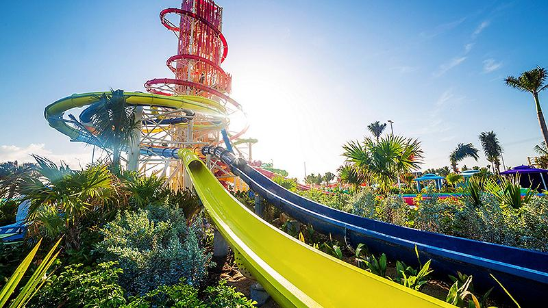

Ways to thrill
Cococay, Royal Caribbean's private island in the Bahamas, is packed with thrilling activities for all ages. You can zip line high above the island, getting amazing views of the clear waters and lush scenery. If you're into heart-pounding fun, check out the towering waterslides at Thrill Waterpark for twists and turns that'll leave you breathless. Snorkeling is also a blast here, exploring colorful reefs filled with marine life.
Ways to chill
Cococay, Royal Caribbean's island in the Bahamas, is a great place to chill out and relax. You can hang out on Chill Island's soft sand and enjoy the warm sun and cool breeze. Take a walk along the beach and listen to the peaceful sounds of the waves. If you want some extra relaxation, you can rent a private cabana with fancy stuff and your own service, where you can enjoy the beautiful ocean view all to yourself. Get a massage by the sea, swing in a hammock under the palm trees, or just take in the beautiful sights. Cococay is the perfect place to escape from your busy life and unwind.
| Complimentary Experiences | |
|---|---|
| Category | Experience/Amenity |
| Thrills | Splashaway Bay |
| Captain Jill Galleon | |
| Dining | Skipper's Grill |
| Chill Grill | |
| Snack Shack | |